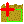
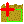
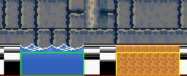
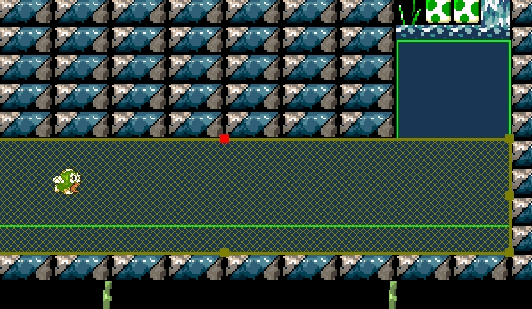

Physical environment area (Water, Quicksand, etc.) - this is a specual unit what define the physical environment inside his rectangle.
Inside SMBX available only two types of physical environments: Water and Quicksand.
Because Physical environment - is a sizable item, it placing by rectangle drawing. For place them, you need to select on toolbar one of icons:
 

Blue - draw water zone, Yellow - draw quicksand zone.
Placed physical environment rectangles:
Green - water, Yellow - quicksand

You always have possible to change environment type of placed rectangle:

Also, you can resize environment rectangle, if you made mistakes with size of them:

Copyright © 2014-2015 Platformer Game Engine by Wohlstand project. All rights reserved.